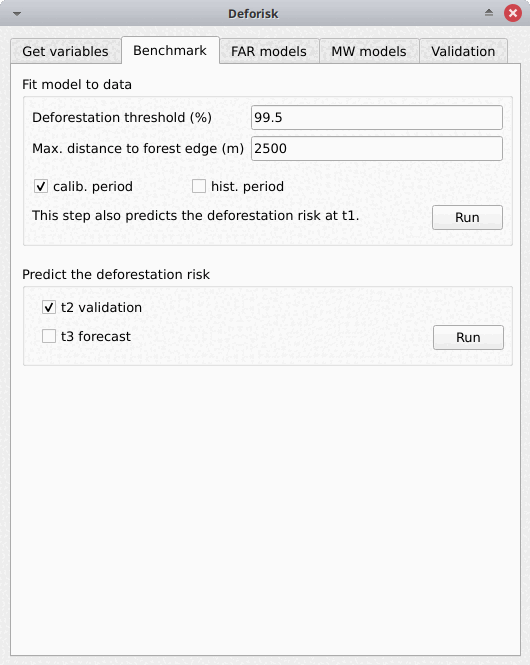
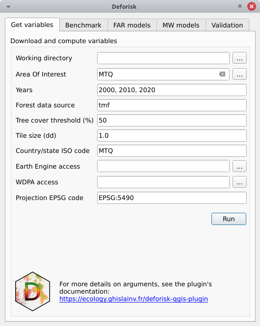
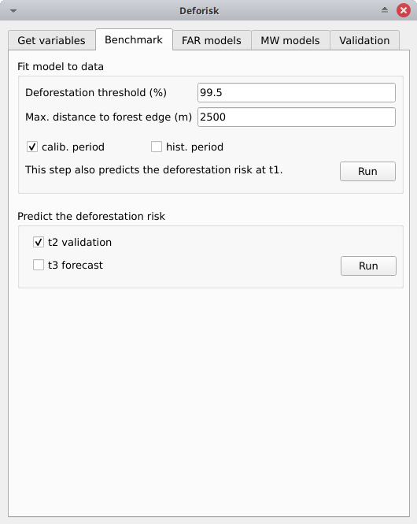

Plugin API#
Plugin interface#
The plugin interface shows five tabs: Get variables, Benchmark, FAR models, MW models, and Validation. Each tab includes one or several boxes. For example, the Far models tab includes three boxes: Sample observations, Fit models to data, and Predict the deforestation risk. The arguments of each tab or box are detailed below. They usually correspond to function parameters from the Python packages used by the deforisk plugin.
Get variables#
Download and compute variables#
This box is for collecting the information needed to download the data and compute the variables that will be used to spatially model the deforestation risk for a given area of interest.
Working directory: Path to the working directory where all the data and model outputs will be stored.Area Of Interest: Country ISO 3166-1 alpha-3 code (eg. MTQ) or path to GPKG vector file in lat/lon delimiting the area of interest (jurisdiction) and the sub-jurisdictions. The GPKG vector file must include two layers, the first one must be named “aoi” for the jurisdiction and the second one must be named “subj” for subjurisdictions. This GPKG vector file can be manually obtained using Qgis tools and data from the Global Administrative Areas (GADM) website. An example is given in the following article on using subnational jurisdictions.Years: Years delimiting the two periods (calibration and validation periods) for forest cover change observations. Three years must be provided. Years can be in the interval 2001–2024 for GFC (GFC does not provide loss for the year 2000) and 2000–2023 for TMF.Forest data source: Source of the forest data. Could be either “tmf” or “gfc”.Tree cover threshold (%): Tree cover percentage used to define the forest when using GFC.Tile size (dd): Tile size (in decimal degrees) used to download forest cover change. A value of 1 degree is recommended.Country/state ISO code: Country or state ISO code used to download GADM, OSM, SRTM, and WDPA data. The iso code should correspond to the country to which the aoi provided inArea Of Interestbelongs. For Brazilian states, use the code of the state in the form “BRA-XX” (e.g. “BRA-AM” for the Amazonas state). A list of codes that can be used with thedeforiskplugin can be found in this .csv file (see column iso3).Earth Engine access: Name of a Google Cloud project registered to use Earth Engine (and for which you are identified as a user) or a path to a JSON private key file authorizing you to access Earth Engine through a service account.WDPA access: Personal API Token (a series of letters and numbers such asca4703ffba6b9a26b2db73f78e56e088) or a path to a text file specifying the value of the “WDPA_KEY” environmental variable (eg. a simple text file including on one lineWDPA_KEY="3e404871700e77c453c4e189d848f739"for example).Projection EPSG code: EPSG code of the coordinate reference system used for projecting maps.
Pushing the Run button in this box will download the data and compute the variables in the background. When the operation is finished, a forest cover change map appears in the list of QGIS layers. New folders are created in the working directory:
working_directory/iso_code: Unique folder created for the study area.working_directory/iso_code/data_raw: Downloaded raw data for the study area.working_directory/iso_code/data: Processed data that will be used for modelling.working_directory/iso_code/outputs: Outputs (figures and tables).working_directory/iso_code/qgis_layer_style: Layer styles for QGIS.
Benchmark#
FAR models#

Sample observations#
This box is for collecting the information needed to sample the deforestation observations. This is a necessary step as we cannot fit a model using all forest pixels which are usually too many. Nonetheless, sampled observations must be representative of the deforestation process in the study area.
N# samples: Number of observations to be sampled.Adapt sampling: If checked, the number of observations is proportional to forest area.Random seed: Random seed used to make the random sample reproducible.Spatial cell size (km): Size of the spatial cells used to estimate spatial random effects. These spatial random effects account for the residual regional variability in the deforestation risk which is not taken into account by the spatial explanatory variables (e.g. distance to forest edge) included in the model. Use a value so that you have (roughly) between 500 and 1000 spatial cells covering your area of interest.calib. period: If checked, the observations are sampled for the calibration period (t1–t2).hist. period: If checked, the observations are sampled for the historical period (t1–t3).
Pushing the Run button in this box will sample the observations. Note that you cannot sample the observations before downloading and computing the variables (see previous step). When the operation is finished, the sampled observations appear in the list of Qgis layers. You can navigate on the map to confirm that about half the observations have been sampled in the deforested area and half in the non-deforested area. Files sample.txt, sample_size.csv, and correlation.pdf are added to the outputs folder.
Fit models to data#
This tab is for collecting the information needed to spatially model deforestation using three statistical models available in the forestatrisk (FAR) Python package: iCAR, GLM, and Random Forest models.
List of variables: List of explanatory variables used for statistical modelling. Variable names must correspond to file names (without “.tif” extension) in folderworking_directory/iso_code/data. Variable names must be separated by a comma.Starting values for betas: If -99 (recommended), starting values for betas correspond to estimates of a simple GLM with the same variables.Prior Vrho: If -1 (recommended), the prior for Vrho is an Inverse-Gamma.MCMC: Length of the MCMC for the final model.Variable selection: If checked (recommended), a variable selection is performed before fitting the final model.
Pushing the Run button in this tab will fit the statistical model to the deforestation observations. Note that you cannot fit the model if you have not sampled the observations (see previous step). Files summary_icar.txt, mod_icar.pickle, and mcmc.pdf are added to the outputs folder.
MW models#